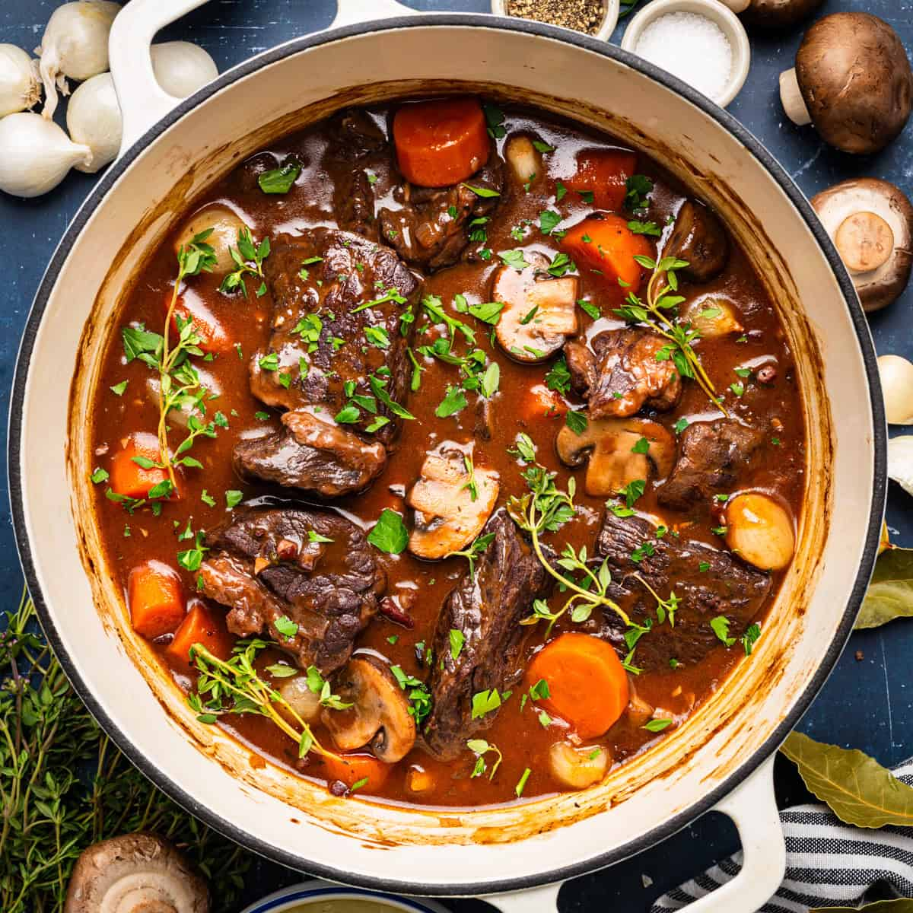
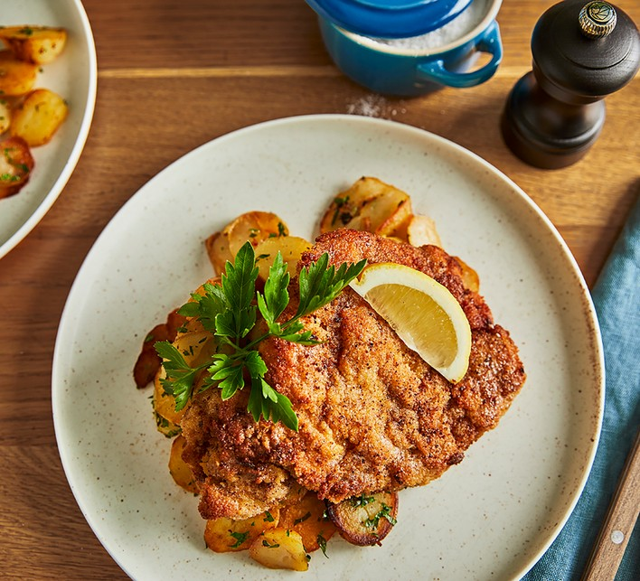

French Beef Bourguignon

Region: Western Europe
Ingredients
- 1.5kg Beef chuck, cubed
- 200g Bacon lardons
- 750ml Red Wine (Burgundy)
- Carrots, Onions, and Mushrooms
- Fresh Thyme and Bay Leaves
Instructions
- Brown the beef and bacon in a large pot.
- Add vegetables and sauté until softened.
- Pour in wine and stock; simmer low for 3 hours.
- Add sautéed mushrooms in the last 20 minutes.
Italian Lasagna Classico
 Region: Southern Europe
Region: Southern Europe
Ingredients
- Lasagna pasta sheets
- 500g Ground Beef & Pork mix
- 700ml Tomato Passata
- Béchamel sauce (butter, flour, milk)
- Parmesan and Mozzarella cheese
Instructions
- Cook a thick meat ragù with tomatoes and herbs.
- Layer: Sauce, Pasta, Meat, Béchamel, and Cheese.
- Repeat until the dish is full.
- Bake at 180°C for 45 minutes until bubbly.
German Pork Schnitzel

Region: Central Europe
Ingredients
- 4 Pork cutlets (pounded thin)
- 1 cup Flour
- 2 Eggs, beaten
- 2 cups Breadcrumbs (Panko)
- Lemon wedges for serving
Instructions
- Dredge meat in flour, then egg, then breadcrumbs.
- Fry in hot oil/butter for 3 minutes per side.
- Ensure the crust is golden and "souffléd" (bubbly).
- Serve immediately with fresh lemon.
Swedish Meatballs (Köttbullar)
.png) Region: Northern Europe
Region: Northern Europe
Ingredients
- 500g Ground Beef/Pork mix
- 1/2 cup Breadcrumbs soaked in milk
- Allspice and Nutmeg
- Beef stock & Heavy cream (for gravy)
- Lingonberry jam (side)
Instructions
- Mix meat, spices, and soaked bread; roll into small balls.
- Fry in butter until browned and cooked through.
- In the same pan, whisk flour, stock, and cream for gravy.
- Toss meatballs back in the sauce and serve with mash.